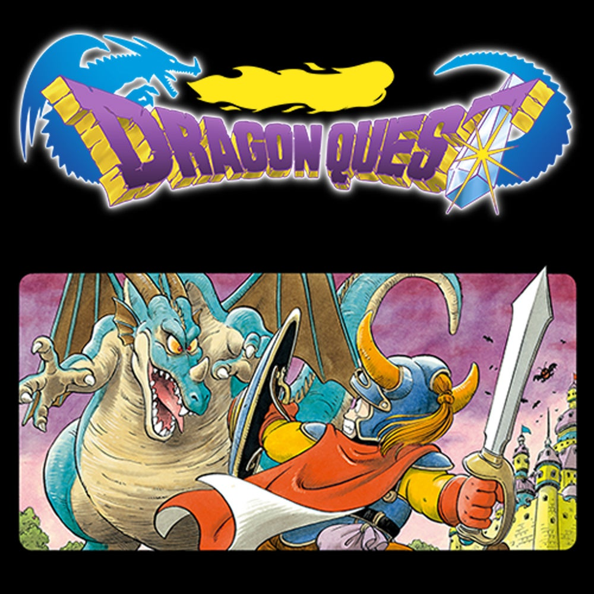
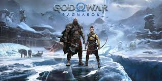

Image 1: Dragon Quest

Image 2: Silent Hill 2

Image 3: God of War: Ragnarok
Image 1: Dragon Quest
Image 2: Silent Hill 2
Image 3: God of War: Ragnarok
Dragon Quest: One of the most famous and the start of a JRPG game. FYI, it was drawn by the Dragon Ball artist, Toriyama. This game is finally available to play on the modern console, Nintendo Switch. However, it's language support sincerely lacks, only being Japanese, English, Korean, and Chinese. If a gamer happens to not know any of these languages, no matter how relaxed they are in finance, they won't be able to play the game.
Silent Hill 2: One of the most famous horror games that recently released a new series of. Silent Hill 2, released in PS2, is one of the classic horror games there is. However, this game also lack in language support. It lacked in Korean, for example, which had a lot of fans, till this day, upset about. This can be a huge problem especially if the game is heavily reliant on its story.
God of War: Ragnarok Yes, this is not a Retro Game. In fact, it came out in 2022. The reason why I still bring it up is because, this is unplyable with a PSN account. PSN is a service for online games for PS consoles. The issue with this is that, PSN is not accessible in 170+ countries in the world. Therefore, by default, God of War: Ragnarok is unplayble in numerous regions. And one day, this game will be a retro game, and it will be unplayble for many people...
p.s There are many other games like Hogwarts Legacy that was released in countries like Brazil, for the same price as it is in the U.S. It makes it impossible to afford for the Brazilians and their cost of living completely differs from the people in the U.S.